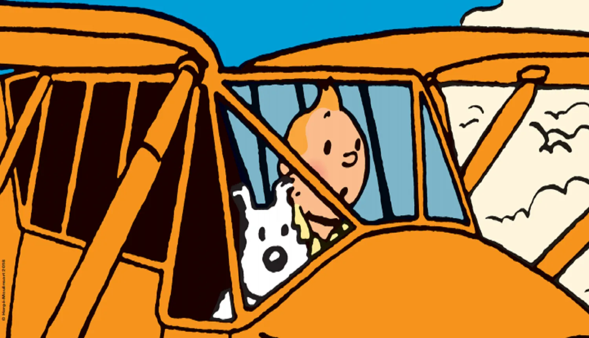

A propos de Tintin.
Tintin est un reporter spécialiste du "coup du ceintre".
Tintin est particulièrement doué pour conduire des trucs.
Listes des véhicules de Tintin
- Moto
- Avions
- Sous-Marin
- La Fusée bien sur
Les compagnons de Tintin
Tintin est entouré d'une gallerie de personnnages mémorables. Il y a un lien en dessous. Clique.